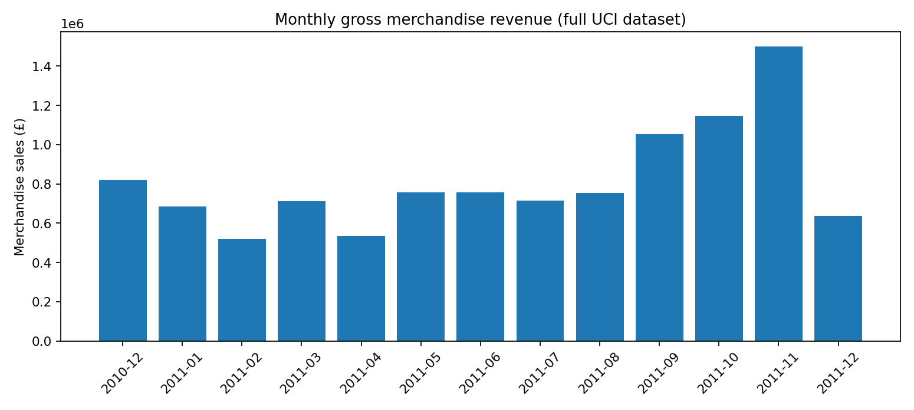
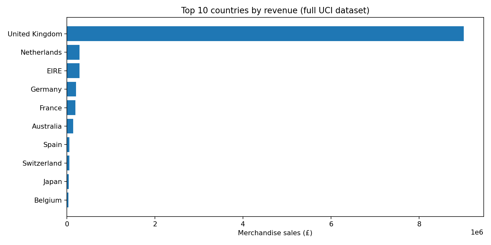

UCI Online Retail · ETL · SQLite star schema · SQL analytics


Extracted real transaction records; filtered cancelled invoices, invalid quantities/prices, and postage; retained unknown customer IDs without inventing identities; loaded fact_sales and four dimensions into SQLite; produced SQL aggregates and an RFM report.
Data source: Chen, D. (2015), UCI Online Retail, DOI: 10.24432/C5BW33 (CC BY 4.0).